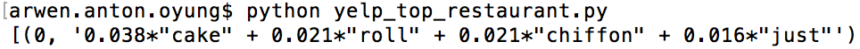
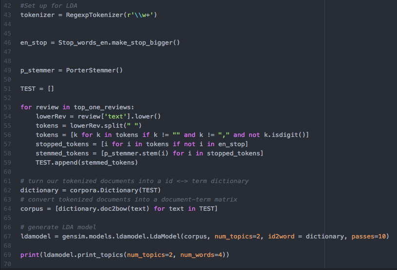

Projects
Yelp
This Spring semester I've been working on a NLP project analyzing Yelp's academic dataset, a free dataset released by Yelp for their yearly data competition. My partner Andrew and I are utilizing LDA (Latent Dirichlet Allocation), an information retrieval algorithm, to provide recommendations on what dishes to order at a given restaurant. We do this by analyzing word frequencies and commonly used phrases to parse text reviews.
Code: YelpDataset


